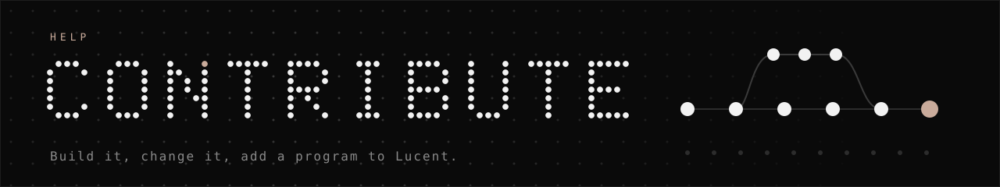

Contributing
Bento is small enough to read in an afternoon. Fixes, new Lucent programs and better docs are all welcome.
The repository
| Folder | What is in it |
|---|---|
install.ps1 | The installer. scripts\lib\ui.ps1 holds its menus and banner. |
config\ | The YASB template and styles, komorebi, whkd and Tacky Borders configuration. |
settings-app\ | The Rust and egui source of Bento Settings. |
rainmeter\ | The Rainmeter skin. |
wallpapers\ | The six included wallpapers. |
docs\ | This site (plain HTML and CSS, served by GitHub Pages). |
.github\workflows\ | The release build. |
Build the settings app
You need Rust and a linker for your toolchain (Visual Studio Build Tools for the default MSVC one).
git clone https://github.com/ProgrammerManSudjo/bento
cd bento\settings-app
cargo build --release
.\target\release\yasb-settings.exeRun the installer with -SettingsExe pointing at your build to try it end to end.
Try the installer safely
.\install.ps1 -DryRun # prints every step, changes nothing
.\install.ps1 -Preset Core -Yes # no questionsAdd a program to Lucent
Each themed program is one entry in the APPS list in settings-app\src\lucent.rs, plus a function that writes its theme file from the palette. The existing entries are the best template. Steps:
- Find where the program reads a theme or stylesheet, and whether it needs a restart to notice a change.
- Add the entry and a writer that produces the file from the palette values (accent, background, text).
- Give it a card on the Lucent page and, if it needs one, a restart offer.
- Add a row to the supported programs table in the README and on the Lucent page, with its install link and one-time step.
Keep the repository clean
- No personal paths, monitor names or app rules. Use
{{HOME}}style placeholders in templates. - Installer scripts stay ASCII-only so Windows PowerShell 5.1 reads them correctly.
- No background helper services: everything runs when you press Apply, or at sign-in through the startup task.
Reporting problems
Open an issue on GitHub with your Windows version, what you ran, and the relevant part of %TEMP%\stagger-startup.log if it is about start-up.
Bento is MIT licensed. komorebi, YASB and the other projects it builds on have their own licences: credits and licences.